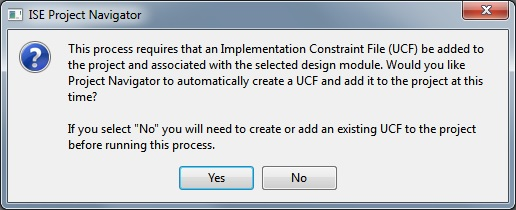
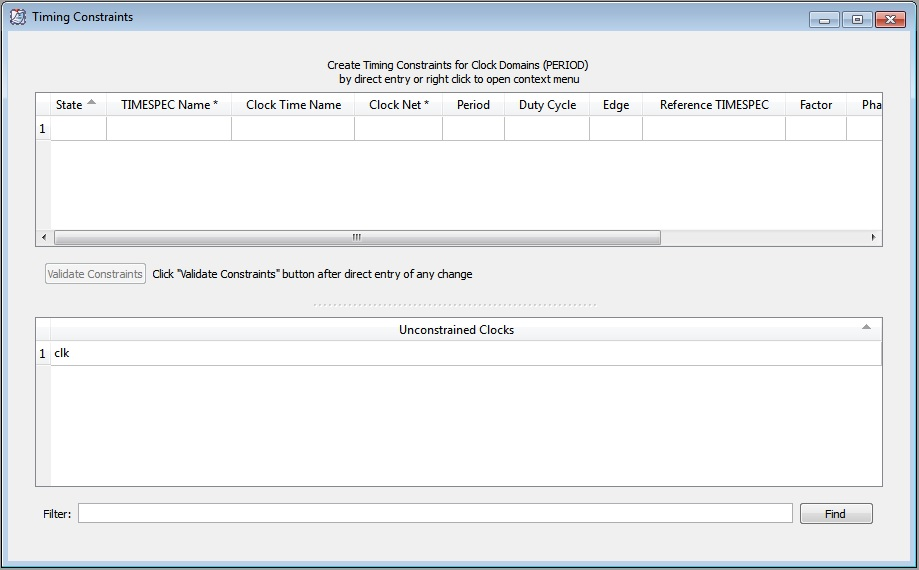
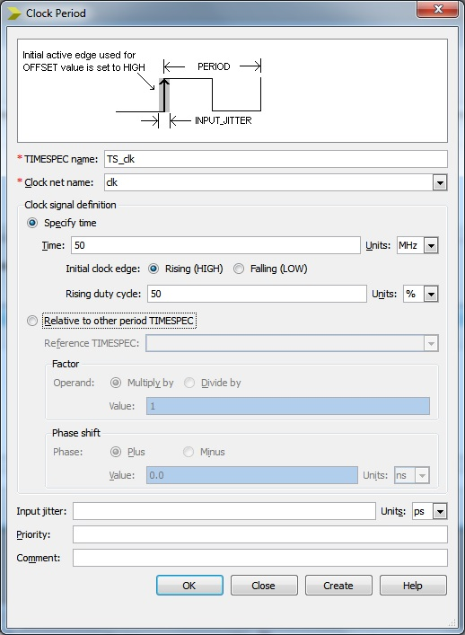

EEE6225 Systems Design
| Tutorial 1: Introduction to VHDL and Xilinx ISE |
| Defining constraints |
There are a number of different types of design constraint understood by ISE. Constraints are used to provide further details of the designers intent not covered by the VHDL descriptions. Typical constraints concern timing (the desired clock rate), area (how the design should be floor-planned and which physical pins should be used. This may be considered a more advanced topic however defining both timing and pin constraints are necessary in order to get a design working on a real FPGA device. |
| 1. Implementation constraints file |
To fully implement the design you need to do some things first. The connections into your design (in this case: A, B, sel and Q) are not yet assigned to particular pins on the FPGA and to do this you must apply some constraints specifying the assignment of signals to pins (there are other constraints that can be set but we will not worry about these). To do this we need an Implementation Constraints File. The tool will automatically create one assuming the top level is defined and Yes is answered to the question in Figure 1 when required by one of the tools (eg. PlanAhead) |
|  Figure 1. Creating an implementation constraints file |
NOTE: for a larger project with many VHDL files the implementation constraints file must be associated with the top-most level of the design. The entity ports of the top most design entity are automatically assumed to be mapped to package pins of the FPGA. It is up to you to tell the tool which pins to use (if you dont they will be assigned randomly)! |
| 2. Assigning Package Pins |
With the top level module in the design selected in the hierarchy window look at the Processes window at the User Constraints line click the plus if needed to expand the items and then double click IO Pin Planning (PlanAhead) - Pre-Synthesis item to execute the PlanAhead tool. If the UCF file does not exist then the question as in Figure 1 will be displayed (answer yes). After several seconds the PlanAhead view will be displayed. This provides many views of the device so can take some time to find your way around it. |
 Figure 2. PlanAhead assigning I/O pins |
|
At the bottom of the window is the I/O Ports section and the task is to add the
Site (pin location) to each of the inputs and outputs. The values entered are specific
to each type of board and the reference documentation for the available boards should be consulted to
choose suitable switches and LED to test your design. For the Digilent Spartan 3 board these are:
Finally, click on the Save Constraints Icon (top left disk icon) or simply CTRL-S to save and exit PlanAhead. |
| 3. Timing constraints |
The mux example is too trivial to apply timing constraints so this section can be skipped. As an illustrative example the LFSR from tutorial 2 is used. You may wish to review this section after completing tutorial 2. However, for larger designs including sequential logic (use a clock) the design tools need to be told what frequency you wish to operate at. This allows the built in optimiser to work effectivly and carry out a process known as timing closure. This automatically ensures that the given design in terms of its critical path will meet your requirements (or generate a suitable error message). First check the top level module is selected in the Hierarchy window. In the Processes window, expand the User Constraints item to reveal the Create Timing Constraints item and double click on this. Your code should automatically be synthesised (if required) and the Constraints Editor displayed (Figure 3). This should list all the clock networks in your design, initially in the unconstrained section. |
|  Figure 3. Constraints Editor |
For each clock, double click on its name this will activate a form allowing a more user-friendly entry of the timing constraints (alternatively data can be entered into the table directly). If there are any "clocks" you dont recognise then contact a demonstrator for advice. As shown in Figure 4, select the Specify time option and enter a value of 50 with units of MHz. This is to match the clock source on the development board. Finally, click on Create or Close, the clock name should now appear in the upper half of the window (Figure 3) with the defined frequency. Click on the save icon or CTRL-S to save the new constraints to the UCF file. NOTE: at a more advanced level, this clock may be used to generate a different frequency using on of the clock manager elements inside the FPGA. Also, a clock constraint only constrains paths between sequencial elements withing the device, there are also paths from the device inputs and outputs to internal elements which also require additional path constraints. |
|  Figure 4. Defining clock frequency |
| 4. Repeat Synthesis |
From the Project Navigator's Hierarchy window, make sure the top level module is selected. Then from the Processes window double click the main Synthesize-XST again to carry out a full synthesis of the design, constraints included. If there is a green tick next to the Synthesize-XST item, right-click on it and select Rerun. |
| Continue on to Place and Route |